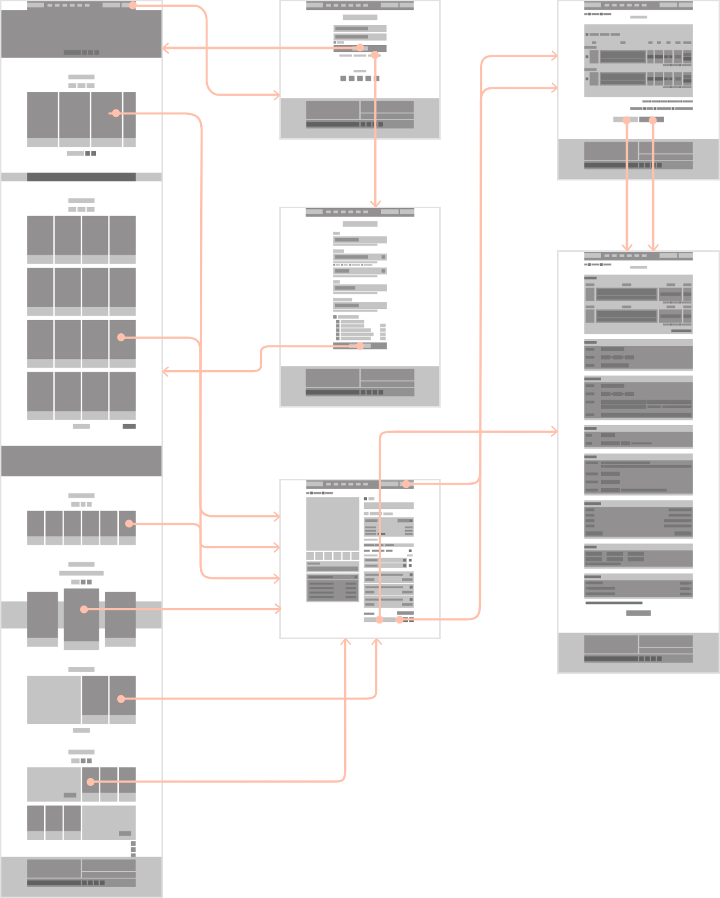
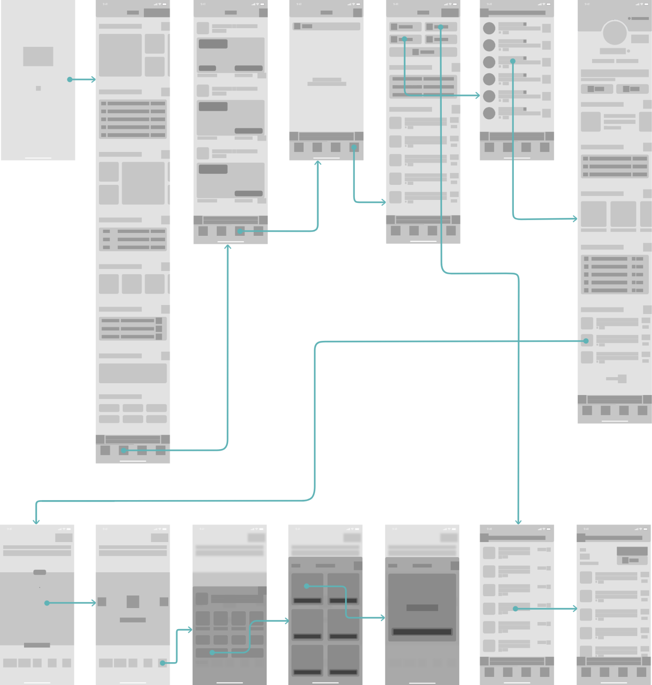

Project
Intro
개인 프로젝트로 진행된 쇼핑몰 ‘하이버' 웹과 음악플랫폼 ‘사운드클라우드' 앱을 소개합니다.
HIVER
Overview
400만명이 선택한 남성전용 쇼핑몰 하이버는 모바일 앱 뿐만아니라 PC 웹 쇼핑몰도 존재합니다.
웹에서 하이버의 사용편의성과 만족스러운 UX를 제공하기 위해 세심한 부분까지 개선하고자 하였습니다.
Analysis
많은 이슈 중 가장 필요한 개선점 두 가지를 도출합니다.
앱에 비하여 고도화 되지 않은 웹사이트를 UI 재배치와 친절한 UX writing을 통해 개선하였습니다.
상품 탐색부터 구매까지 최소한의 기능만 제공하던 것을 상품구매 과정의 전반을 보다 편리하고 다양한 선택이 가능하도록 개선하였습니다.
Design Strategy
도출한 목표에 도달하기 위해서 다음과 같은 세 가지 전략을 제시합니다.
-
Kindness상품을 구매하는 데 있어서 친절한 UX writing을 보여줄 것
-
Efficiency상품을 구매하는 과정에서 사소한 수고로움을 덜어줄 것
-
Satisfaction상품을 구매하는 매 순간 만족감을 제공할 것
Wireframe
개선의 첫걸음, 와이어프레임입니다.
Design
이미지 영역 내에 스크롤하여 전체 디자인 페이지를 확인할 수 있습니다.
01 메인 페이지

- 사용자가 웹 쇼핑몰을 둘러볼 때 시선의 이동이 자연스레 할인율과 가격에 닿을 수 있도록 타이포그래피를 이용한 높은 위계를 주었습니다. 브랜드 컬러를 기존보다 채도가 높은 것으로 재설정 하였기에 주목성는 그만큼 더욱 향상됩니다.
- GNB 영역은 페이지를 스크롤 했을 시 고정되어 언제든 다시 원하는 페이지로 이동하거나, 원하는 테스크를 수행할 수 있도록 돕습니다.
- 각 섹션별 레이아웃을 적용하였고 좌우 핸들이 달린 영역은 그에 맞는 인터랙션 즉 시간제한으로 고가브랜드를 할인해주는 것은 Carousel 방식으로 나타나게 됩니다.
- 할인에 대한 정보를 알기 쉽게 텍스트의 위계를 이용하여 설정하였습니다.
- 최하단 영역인 푸터엔 필요한 요소를 담았습니다.
- 3가지의 기능을 가진 FAB 또한 스크롤이 발생함과 동시에 우측 하단에 상시 배치되어 사용자의 편의를 도모합니다.
02 로그인 & 회원가입
- 모든 인풋에 대한 Validation의 결과 값을 Helper text로 나타내어 사용자로 하여금 인지할 수 있도록 하였습니다.
- 그밖의 Placeholder 등 여러 Input과 버튼에 대한 상태별 디자인을 하였습니다.
- 하이버의 새로운 슬로건이 상단에 위치하고 자동로그인을 추가하여 사용성을 높였습니다.
03 상품상세

- 사용자의 상품구매에 필요한 모든 편의 기능을 넣으려고 노력했습니다.
- 옵션을 지정하기 전, Tip의 친절한 안내에 따라리뷰 외에도 실구매자들의 사이즈 정보를 제공함으로써 비대면으로 이뤄지는 온라인 의류 구매의 실패율을 줄이는 효과를 기대하였습니다.
- 또한 저렴한 가격에 여러 색상을 판매하는 의류에 맞추어 색상 또는 사이즈를 선택 후 해당하는 옵션을 고정하여 여러 벌을 택하는 사용자에게 좀더 적은 액션을 취하게끔 하여 제품구매의 과정 중 하나로 효율성을 높이려 했습니다.
04 장바구니
- 삭제/변경/주문에 대한 모든 변수를 고려하여 사용자가 원하는 테스크를 달성하는 것에 최적화 하였습니다.
- 상품상세 페이지와 더불어 장바구니에도 Breadcrumbs를 좌측 상단에 배치하여 사용자가 어떤 경로로 페이지에 도달 하였는지 알 수 있고, 쉽게 이전 페이지로 이동할 수 있도록 하였습니다.
05 주문하기
- 갖고 있던 쿠폰을 적용하있는 기능을 포함하여 결제예상금액을 나타냅니다.
- 또한 Breadcrumbs를 통해 다시 장바구니로 가서 옵션을 변경할 수 있도록 상품구매에 대한 모든 편의를 제공하고 있습니다.
- 배송주소를 사용자의 회원정보로 등록하는 기능을 넣음으로써 보다 효율적인 플로우를 도모했습니다.
- 포인트 사용시 사용자의 번거로움을 줄이기 위해 항상 전액사용 기능을 추가하였습니다.
- 또한 환불에 대한 모든 추가정보사항을 넣어서 변수에 대한 대처하는 기능을 갖춰 놓았습니다.
- 최종 결제 예상금액을 시인성 좋은 포인트 컬러로 적용하였습니다.
- 결제수단 또한 직관적으로 알 수 있는 각각의 브랜드컬러로 적용하였습니다.
- 끝으로 약관 동의란을 통해 주문서 작성의 대단원을 마무리 짓게 됩니다. 이제 눈에 잘 띄는 주문하기 버튼만 클릭하면 각 결제수단에 따른 일련의 과정이 시작 됩니다.
SOUNDCLOUD
Overview
음악콘텐츠 서비스의 대명사인 사운드클라우드! 그 자유로움에 빛을 더하기 위하여
정돈되고 트렌디한 UI디자인을 구축하고 유저플로우의 UX 개선으로 만족감을 극대화하고자 하였습니다.
Analysis
분석결과 나타나는 Pain point 중 가장 필요한 개선점 두 가지의 Touch point를 도출합니다.
같은 UI의 지루한 반복과 한눈에 어떤 카테고리인지 알 수 없었던 UI를 직관적인 타이틀과 UI로 사용성을 개선하였습니다.
정돈되지 않아 어수선한 UI와 사용성을 고려하지않은 UX를 사용자가 자연스럽게 항목을 인지하고 사용할 수 있도록 개선하였습니다.
Design Strategy
도출한 목표에 도달하기 위해서 다음과 같은 두 가지 전략을 제시합니다.
-
Intuition직관적인 UI를 제공하여 사용자의 편의를 도모할 것
-
Trend디자인 트렌드를 적용하여 보는 즐거움을 선사할 것
Wireframe
개선의 첫걸음, 와이어프레임입니다.
Design
Splash screen
앱을 구동시킴과 동시에 완전히 앱이 로드 되는 동안
사용자는 앱에 대한 첫 인상을 받게 됩니다.
이때 스플래시 스크린을 이용하여
브랜딩을 도모할 수 있습니다.
리디자인 된 스플래시 스크린은
기존의 쨍한 주황빛으로 인해
스트레스를 유발하던 것을 제거 하고,
중앙에 위치한 브랜드 로고로
시선이 집중되는 것에 초점을 두었습니다.
Pages
직관적인 리스트별 UI로 사용자들이
쉽게 원하는 콘텐츠를 탐색할 수 있도록
설계하였습니다.
또한 필요한 만큼의 정보를 담은 타이틀
은 사용자가 쉽게 이해하고 사용할 수
있는 첫 단계가 될 것입니다.
심플함을 따라가는 디자인이 아닌,
사용자를 고려한 디자인인 페이지입니다.
Artist profile
아티스트에 대한 많은 양의 정보를
시선의 흐름에 따라 이동하도록 설계하였습니다.
특히 팔로우 버튼을 엄지손가락이 잘 닿는 위치이자
긍정의 위치인 오른쪽에 두었다는 것이 핵심입니다.
이 페이지는 홈과 마찬가지로 UI를 직관적으로 수정하여
무엇이 앨범이고 무엇이 리스트고 무엇이 랭크탑인지
알 수 있도록 하였습니다.
Now playing
사운드클라우드만의 최대 장점,
전체화면을 쓰는 재생스크린입니다.
보다 시원시원한 음량그래프를 통하여
시각적으로 인지적으로 느낄 수 있도록
하였으며, 타이틀 및 재생시간 중앙 정렬을 통해
균형감을 더했습니다.
사용자들이 각 포인트별로 남긴 #코멘트는
듣는 즐거움에 공감하는 재미에 만족을 더해줍니다.
Add to playlist
사용자가 플레이리스트를 생성 또는 추가하는 것은
앱의 사용성에 있어서 핵심이 되는 테스크일 것입니다.
슬라이드 업 되는 인터랙션과
귀엽게 등장하는 완료 축하메시지는
사용자와 서비스간의 애착을 만들어 낼 것입니다.